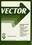

Volume 1, 1984–1985 N°1, May 1984 N°2, October 1984 N°3, January 1985 N°4, April 1985 N°1, May 1984¶ Page Article Author 3 EDITORIAL: Back to BASICs? (PDF) Robert Bittlestone APL NEWS 5 Letters to the editor (PDF) Bowman, Camacho & Hawke 8 Quick-reference APL diary (PDF) David Preedy 9 British APL Association news (PDF) Robert Bittlestone 15 1983 Report and Accounts (PDF) Jonathan Barman 17 International APL news (PDF) Robert Bittlestone 21 British Computer Society news (PDF) Philip Goacher 23 News from sustaining members (PDF) David Preedy 25 APL product guide (PDF) David Preedy 33 RECENT MEETINGS 35 APL and Graphics (PDF) Adrian Smith 36 A Graphic Vision of APL Graeme Robertson 41 APL in the Information Centre Adrian Smith 42 Setting up a Company Information Centre Romilly Cocking 45 The Global Information Centre Fred Perkins 46 Panel Discussions on Information Centres Various Contributors 48 Communicating with APL Adrian Smith 49 Networking APL Microcomputers Richard Nabavi 59 Interfacing Viewdata and APL John Pym 62 IBM-based APL Communications Tim Perry 63 GENERAL ARTICLES 65 Why APL? A non-technical introduction Robert Bittlestone 77 Steps towards a better BASIC — part 1 Anthony Camacho 79 Case Studies: an invitation Adrian Smith 79 “Matchmakers” Simulation Adrian Smith 80 Matchmakers: a simulation case study (PDF) Adrian Smith 87 The paper they dared not print Anonymous 89 FGL: Fifth Generation Language Robert Bittlestone TECHNICAL ARTICLES 103 Technical Editorial Barman & Ziemann 105 Prize Competition: This Is Your Life David Ziemann 107 Complex numbers in APL Alan Hawkes 121 SCREENIO: An IBM Full Screen Manager David Doherty 129 APL and partitioned data Jonathan Barman 143 Inside the international APL standard David Ziemann PDF of the whole issue N°2, October 1984¶ Page Article Author 3 EDITORIAL: Adopting the Missionary Position? (PDF) Robert Bittlestone 5 APL NEWS 5 General correspondence (PDF) 8 Quick-reference APL diary (PDF) David Preedy 9 British APL Association news (PDF) Robert Bittlestone 12 International APL news (PDF) Robert Bittlestone 21 British Computer Society news (PDF) Philip Goacher 25 News from sustaining members (PDF) David Preedy 29 APL product guide (PDF) David Preedy 41 Book reviews (PDF) Preedy & Franksen 44 Software review (PDF) Bernard King 47 RECENT MEETINGS 48 APL vs. packages and 4GL’s Adrian Smith 49 4GL’s Killing APL? Desmond Booth 52 APL84 in focus Smith, Bowman & Lyus 54 An APL Compiler (PDF) Roy Sykes 54 Dyalog APL (PDF) John Scholes 55 The Ampere: A Portable APL Machine (PDF) Philip van Cleave 56 APL2 (PDF) Jim Brown 57 The APL Machine (PDF) Jim Ryan 59 GENERAL ARTICLES 61 Mr. Babbages’s Secret: A Presentation Ole Franksen 65 XPL: An Expert Systems Framework in APL (PDF only) ⚠ Robert Bittlestone 73 Steps towards a Better Basic — part 2 Anthony Camacho 75 APL and Graphics Standards Richard Bowman 78 GKS: An Opportunity for APL Richard Nabavi 83 Graphics for Decision Makers David Preedy 89 Case Study: Imperial Group plc Adrian Smith 97 TECHNICAL ARTICLES 99 Technical Editorial Ziemann & Barman 101 Technical Correspondence 107 Prize Competition: Matrix Numeric Validation David Ziemann 109 APLpip: The Hard Seed of a Health and Wealth giving Fruit Llewellyn-Jones 113 Statistical computing with APL Alan Hawkes 117 Numeric integration & probability distribution Alan Hawkes 124 APL ISO Standard Meeting (photographs) 125 ISO Standards update David Ziemann ⚠ The transcription is doubtful or missing; its page says why. PDF of the whole issue N°3, January 1985¶ Page Article Author 3 GUEST EDITORIAL: The evolution of APL (PDF) Adrian Smith A.P.L. NEWS 5 General correspondence (PDF) 7 Quick-reference APL diary (PDF) David Preedy 8 British APL Association news (PDF) Robert Bittlestone 8 Activities Programme 1985 (PDF) 14 International APL news (PDF) 21 British Computer Society news (PDF) Philip Goacher 22 News from sustaining members (PDF) David Preedy 27 APL product guide (PDF) David Preedy 39 Book Review (Legrand) (PDF) Anthony Comacho 41 Book Reviews - General (PDF) Robert Bittlestone 45 Software Review (UREG) (PDF) Teresa Jones 47 RECENT MEETINGS 48 Introductory Notes Adrian Smith 49 Expert Systems M.J. Winfield 60 Workshop: Surviving in APL/XX 63 What’s New for 1985 Dick Bowman 65 1984 IPSA Users Meeting Adrian Smith 81 GENERAL ARTICLES 83 Preferring a Menu-oriented Dialogue Gosta Olavi 91 Towards a Teachable Interface Adrian Smith Case Study .... 101 PATTIE: a Practical Expert System Christopher Harvey 113 TECHNICAL ARTICLES 114 Technical Editorial Ziemann & Barman 116 Technical Correspondence 120 Surely There Must be a Better Way David Ziemann 123 Prize Competition 1: Results David Ziemann 126 Prize Competition 3: Test Your Skill David Ziemann 128 Generic Read and Replace in IPSA Robert Pullman 135 An APL Dialogue Graeme Robertson 156 Quotition Jottings Michael Carmichael 160 Random Contingency Tables Dr. A.G. Prys Williams PDF of the whole issue N°4, April 1985¶ Page Article Author 3 EDITORIAL: Your Association needs you (PDF) Robert Bittlestone APL NEWS 5 General correspondence (PDF) 6 British APL Association news (PDF) David Ziemann 8 Free APL computer (PDF) David Ziemann 18 International APL news — APL86 (PDF) Goacher & Ziemann 31 British Computer Society news (PDF) Philip Goacher 33 News from sustaining members (PDF) David Preedy 37 APL product guide (PDF) David Preedy 51 Book Reviews (PDF) Robert Bittlestone 54 Software Review (PDF) Adrian Smith 61 RECENT MEETINGS 63 The Royal Overseas League Adrian Smith 63 APL and GKS Richard Nabavi 63 APL and GKS (PDF) Richard Nabavi 65 Duck à la Carte (PDF) Peter Donelly 65 Duck a la Carte Peter Donnelly 65 Getting the Best out of GDDM Adrian Smith 65 Getting the best out of GDDM (PDF) Adrian Smith 73 GENERAL ARTICLES 75 Reinventing Man: Goodbye to Von Neumann Robert Bittlestone 81 QL/APL — A new approach to popularising APL David Eastwood 90 The information centre as a strategy for the future Fred Perkins 95 Steps towards a better Basic — Part 3 Anthony Camacho 98 Case Study: A practical introduction to expert systems — Part 2 Christopher Harvey 103 TECHNICAL SECTION 105 Technical Editorial Barman & Ziemann 107 Technical Correspondence 112 Surely There Must be a Better Way Dick Bowman 117 Prize Competition Barman & Ziemann 121 Keyword QL/APL — an (occasionally) technical review David Ziemann 130 Moving data from 1-2-3 to APL Michael Carmichael 149 A DIF file interface Romilly Cocking 155 When domino is not sufficient Sykes & Ansell PDF of the whole issue